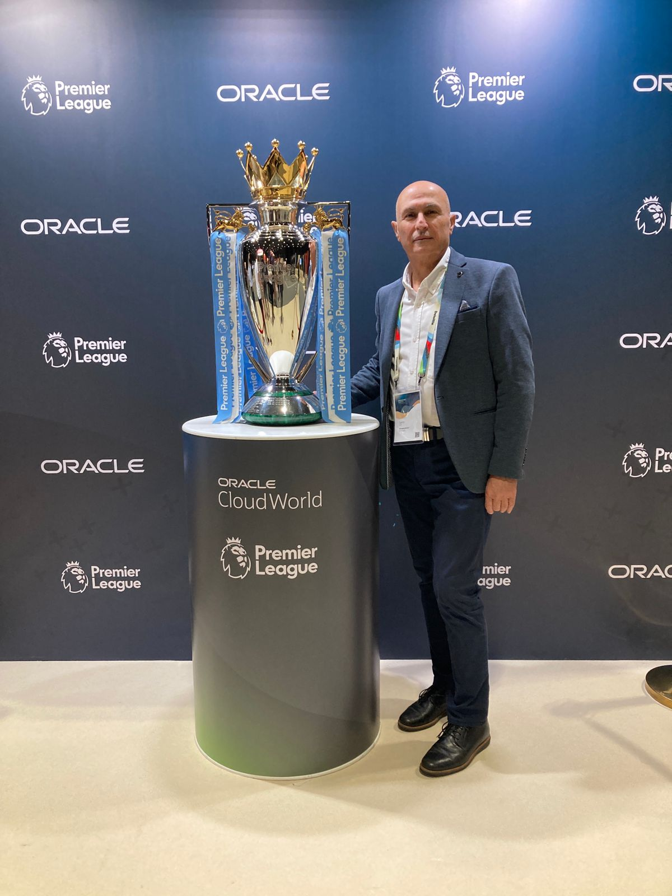

Senior expertise. Direct delivery. No handoffs.
Cristal Technologies is built around hands-on senior delivery. The people who scope your project are the people who execute it — with 40 years of enterprise operations experience across FMCG, distribution, financial services, and healthcare trade in the Gulf and Levant.

Samir founded Cristal Technologies to deliver the senior, vendor-neutral advisory that FMCG, distribution, financial services, and healthcare trade businesses across the Gulf and Levant rarely find through large consultancies.
With over 40 years of enterprise operations experience, his career spans the full technology stack of a distribution-intensive business — from COBOL-era core systems through Oracle JD Edwards, Microsoft Dynamics 365, INFOR WMS, and Roadnet TMS implementations, to Power BI, Cognos, AI-powered Reporting Agents, and reporting layers. An FMCG domain expert with extensive B2B experience, he has worked with leading global brands including P&G, Mars, Nestlé, and Clorox, bringing deep commercial and operational knowledge to every engagement.
He has worked both as a hands-on implementer and as the person inheriting what others built — which means he understands where enterprise projects go wrong and how to fix them.
Based between Dubai and Beirut, Samir brings direct regional knowledge to every engagement, including deep familiarity with the regulatory and operational realities of the Gulf and Levant corridor.
Areas of depth
Why independent advisory matters.
The consulting model shapes the advice you receive. Here is why clients across the Gulf and Levant choose an independent firm over a large integrator or software reseller.
- No vendor alignment. We do not resell or represent any software vendor. Our recommendation is driven by what fits your business.
- Senior delivery. The consultant who scopes your project executes it. No handoffs to junior teams or offshore resources.
- Fixed prices. Every engagement has a defined scope and fixed fee agreed before work starts. No open-ended billing.
- Regional knowledge. Based between Dubai and Beirut. We understand the regulations, culture, and operational realities of the UAE and Lebanon.
"The professionalism and technical knowledge exhibited by Cristal Technologies were outstanding. Their team's dedication to delivering the solution on time and with precision greatly contributed to the success of this project. We highly recommend them for similar Oracle implementations."
Mr. Mohamed F. Nosseir — Senior IT Business Partner, AAW
Talk to Samir directly.
No account manager. No intake form handed to a junior team. A direct conversation about your project with the consultant who will deliver it.